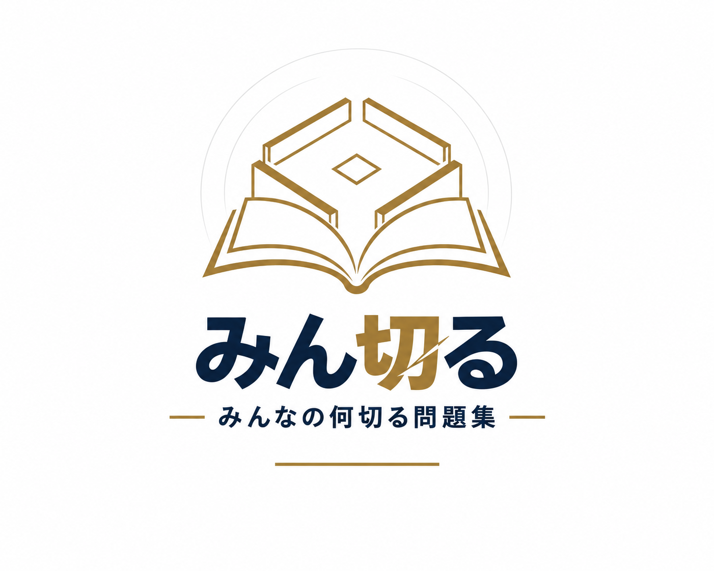
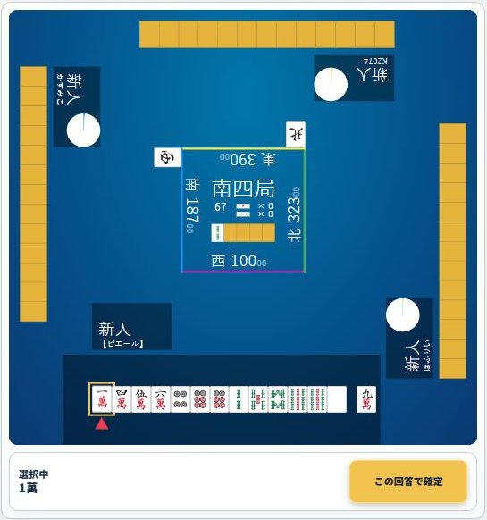
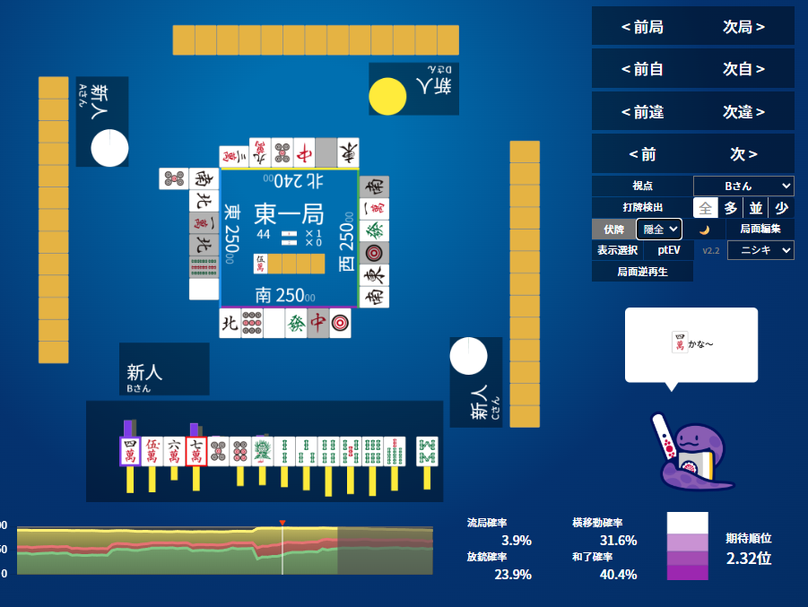
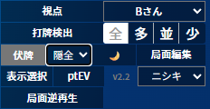
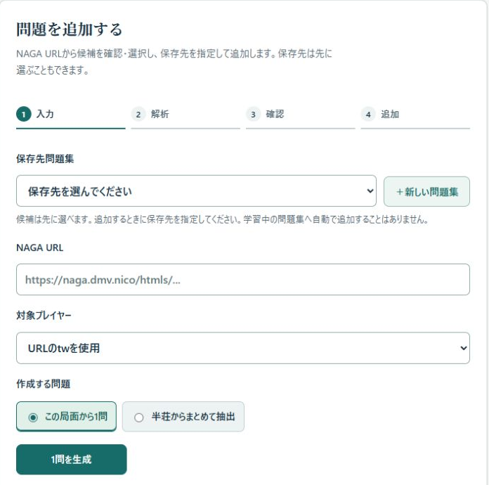
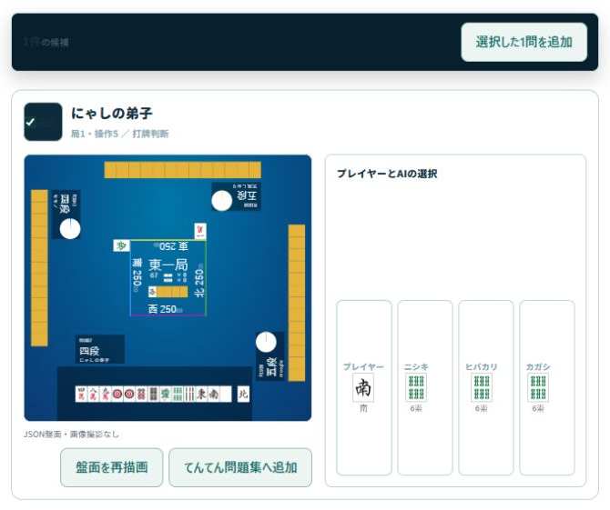
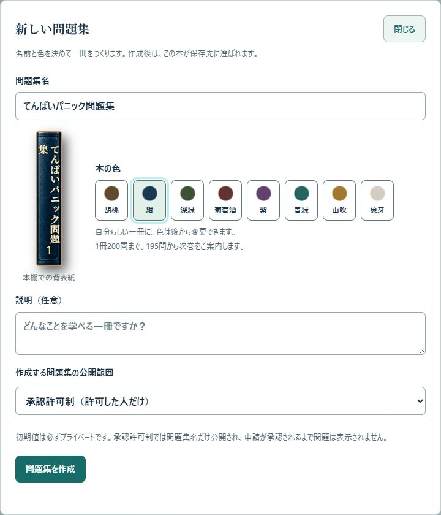
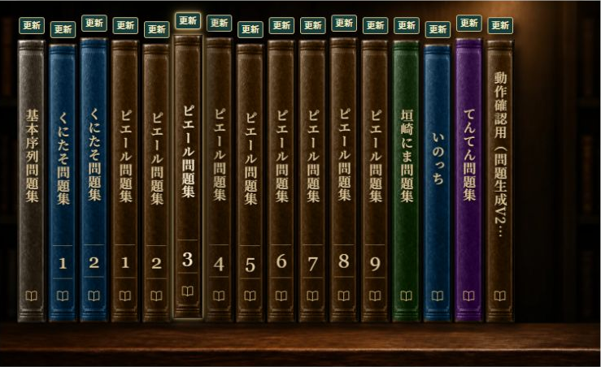

「今月の迷った一打」
気になった局面だけをためて、苦手克服に活用。少しずつ追加して、自分専用の問題集に。
みん切る 使い方ガイド
NAGAで解析した局面を問題にして、何度でも復習。
仲間と問題集を共有して、考え方まで深めよう。

NAGAの解析済み局面を用意。
盤面と対象プレイヤーを確認。
保存先を選べば、学習の準備完了。
スクショの撮影・切り抜き・問題画像のアップロードは不要。
NAGAの解析済みデータから、アプリが盤面を再現します。利用・作成にはDiscordログインが必要です。
INTRO / 紹介動画
問題づくりから、仲間との検討まで。3分以内の動画を、日本語ナレーションと実際の画面でわかりやすく紹介します。
縦長・日本語ナレーション・字幕・BGM付き。再生ボタンを押すまで動画本体は読み込みません。
紹介動画を保存（MP4）生成にはNAGA解析済みのURL、アプリの利用にはDiscordログインが必要です。
01 / 解く
気になる問題集を開いて、自分ならどうするかを選びます。答え合わせでは、NAGAの推奨と自分の選択を見比べましょう。
アプリを開いてログインします。自分の回答履歴は、同じDiscordアカウントで引き継げます。
本棚で本を1回タップすると内容を確認、もう1回で開きます。複数巻ある本は巻を選びます。
学ぶの未回答・苦手克服・全問から開始。問題一覧から直接選ぶこともできます。
手牌や判断を選んでこの回答で確定。推奨・自分の選択・コメントを確認し、次の問題へ進みます。

途中でやめても大丈夫。 戻るで途中保存し、前回の続きから再開できます。途中の出題順・位置は端末ごとに保存されます。
準備 / NAGAの局面URLをコピー
NAGAで出題したい局面を表示し、右側の「v2.2」をクリック。
その瞬間の局面URLが、クリップボードにコピーされます。

NAGAで解析済みのレポートを開き、問題にしたい局面まで進めます。
その瞬間の局面URLが、クリップボードに保存されます。
つくる→NAGA URL欄に貼り付けます。PCなら Ctrl + V、スマホなら入力欄を長押しして貼り付け。

出題したい局面を表示 → v2.2をクリック → みん切るへ貼る。
URLを貼ったら、下の手順で候補を生成・確認し、問題集に追加します。
02 / つくる
用意するものはNAGAで解析済みの局面URL。画面の案内に沿って、3ステップで進められます。

NAGAで出題したい局面を表示し、右側のv2.2をクリックしてURLをコピー。つくるのNAGA URLに貼り、この局面から1問を選択。対象プレイヤーを確認して1問を生成を押します。
盤面・対象プレイヤー・プレイヤーの選択・AIの選択を確認します。出題したい場面かを、ここで確かめましょう。
保存先問題集を選び、候補の［本の名前］へ追加を押します。最後に保存先・件数を確認し、この保存先へ追加で完了です。
新しい問題集も、その場で作れます。 保存先がなければ＋新しい問題集へ。名前・色・公開範囲を決めて問題集を作成すると、その本が保存先になります。
NAGAで解析する前の生の牌譜URLでは生成できません。NAGAの解析済みレポート・局面URLをご用意ください。取得できない局面や未対応の局面は保存できません。
03 / まとめてつくる
一局ずつ探す代わりに、候補をまとめて抽出。必要な問題を選んで、一度に問題集へ追加できます。
NAGA URLを貼り、半荘からまとめて抽出を選択。対象プレイヤーを確認して候補を抽出を押します。
候補の盤面を確認し、入れたい問題の選択にチェックします。抽出条件を調整するは、最初は初期設定のままで大丈夫です。
保存先を指定して選択した○問を追加。保存先・件数の確認画面でこの保存先へ追加を押します。
初回の読み込み後、対象者の名前を選び、もう一度抽出する場合があります。

気になった局面だけをためて、苦手克服に活用。少しずつ追加して、自分専用の問題集に。
1冊の上限は200問。上限に近づくと次巻の案内が出ます。テーマや期間で分けると、探しやすくなります。
04 / 仲間と共有する
おすすめの使い方は、チームで育てる「検討問題集」。対局で迷った一打を持ち寄り、解いてからコメントで意見交換できます。
おすすめの運用例
担当者が問題を追加し、メンバーは時間のあるときに回答。「なぜその牌を選ぶか」をコメントに残せば、集まる前から検討が始められます。

| 権限 | できること |
|---|---|
| 閲覧 | 問題を解く・コメントで検討する。 |
| 編集 | 閲覧の内容に加え、問題の追加・インポート・編集・整理。 |
承認許可制でも、本の名前は一覧に公開されます。
本文は許可されたメンバーだけが閲覧できます。本の名前には、公開してよい名称を使いましょう。公開範囲やメンバーの変更はこの本の管理から行います。
コメントはみん切る内で共有され、Discordへ自動投稿されません。
05 / 続ける
苦手な問題を解き直す。気になる一打を残す。仲間の考えを読む。自分に合う使い方で、問題集を育てていきましょう。
苦手克服では、直近で×・△だった問題を中心に練習できます。
☆ お気に入りで、後から見返したい問題を残しましょう。
コメント追加から文章や画像を投稿できます。自分の投稿は後から編集できます。
全問→条件設定で、順番・ランダム、判断種別、回答結果などを指定できます。
自分の回答数、悪手回避率、平均回答時間などを確認できます。次に復習する問題の目安に。

マイページ→表示・学習→カラーモードで切り替えられます。
表示設定はブラウザーごとに保存されます。いつもの端末で、見やすい表示に整えましょう。
おすすめの続け方
迷った局面を追加 → 自分で解く → コメントを読む → 苦手克服でもう一度。
06 / よくある質問
最初の1問は、解析済みの局面URLから。候補を見て、保存先を選べば始められます。
NAGAで解析済みのレポート・局面URLを使います。解析前の生の牌譜URLでは生成できません。1問をつくるときは、出題したい局面をNAGAで表示し、右側のv2.2をクリック。その瞬間の局面URLがコピーされます。
URLが解析済みか、対象プレイヤーと出題したい局面が合っているか確認します。初回読み込み後に名前を選び直す場合もあります。未対応・取得失敗の局面は保存できません。
追加の最後に表示される保存先と件数を確認しましょう。作成直後の本は保存先に設定されます。本棚からその本を開けば、追加した問題を確認できます。
公開範囲はプライベートが初期値です。チームなら承認許可制、アプリ利用者へ公開するなら全体公開を選びます。閲覧にはDiscordログインが必要です。
チーム共有には向きません。共有用の本はDiscordでログインして作り、公開範囲を設定してください。メンバーには、本を開いた状態のURLを渡します。
コメントの投稿・閲覧は、みん切るの問題画面で行います。Discordへの自動転送はありません。検討してほしい問題は、本のURLとあわせてチームに案内しましょう。
回答履歴は同じDiscordアカウントで同期します。一方、途中の出題順・位置とカラーモードは端末・ブラウザーごとの保存です。
生成するのは盤面を再現した問題です。AIによる文章解説の自動生成ではありません。考え方や補足は、コメントを使って積み重ねていきましょう。
はじめの一歩
Discordでログイン → NAGAの解析済みURLを貼る → 候補を確認 → 自分の問題集へ追加。
画面と機能の説明は2026年9月時点です。画面画像は実際のみん切るを使用しています。